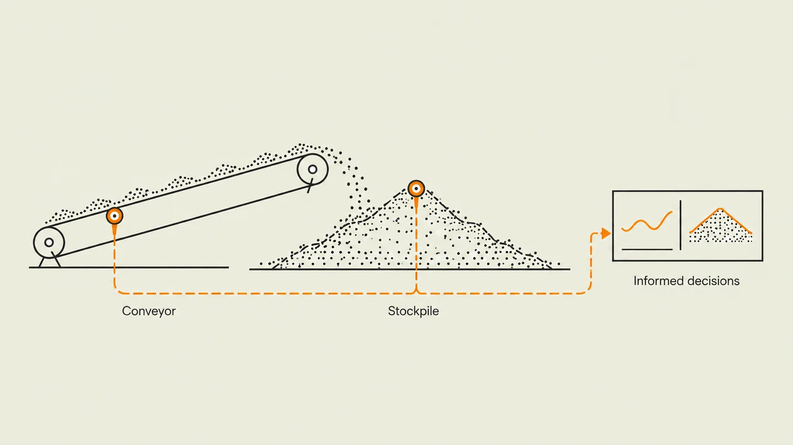
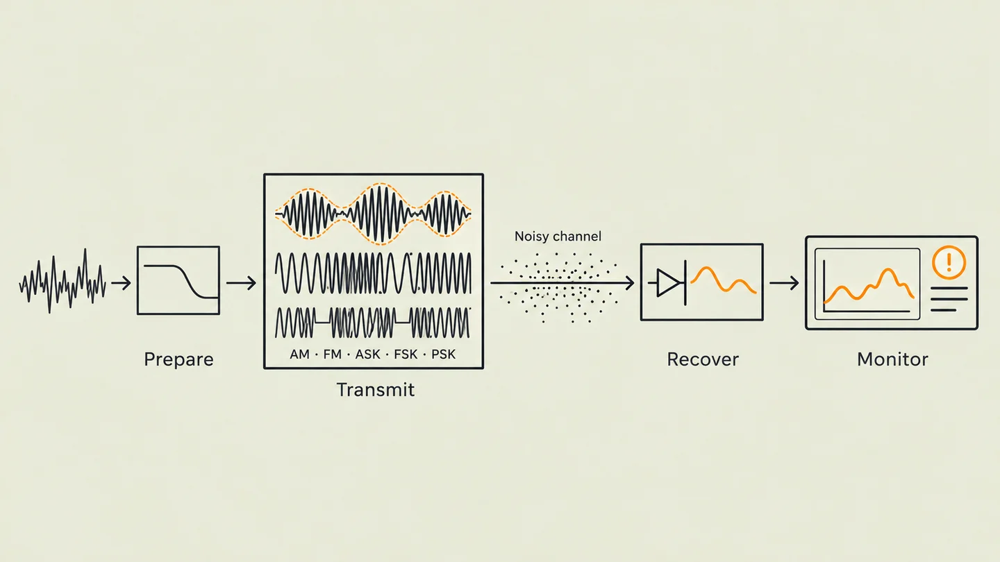

Hardware Control Intelligence
Mechatronics Engineer
Embedded systems, edge-aware ML, and resilient product design.
View ProjectsWhat I build
I build systems that combine hardware, control and data analysis: condition monitoring that flags developing faults, autonomous platforms that make decisions in real time, and signal processing pipelines that turn sensor readings into usable data.
Learn MoreSelected Projects
View all projects
OPTIBELT
Final-year conveyor monitoring project. My work: the motor health index and operating the integrated system on Jetson Nano.

Environmental Telemetry
Air-quality telemetry simulation comparing five modulation schemes. My work: signal preprocessing and sensor-quality screening.
Have a systems challenge?
Equipment failures eating into production time. Sensor data you don't trust. Control systems that need to work first try. Let's design and ship the engineering solution.